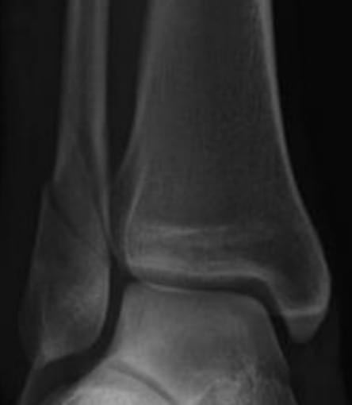
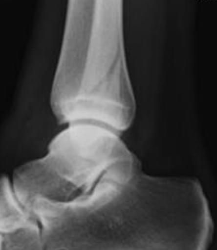

OrtoQuestões
Cena do crimeNÃO ULTRAPASSE
Quem fez isso com este tornozelo?
Quatro suspeitos de Lauge-Hansen.
A investigação completa está no feed.
Uma radiografia, quatro suspeitos e uma classificação que reconstrói o mecanismo do trauma. Você consegue apontar o culpado?


No momento do trauma, o pé estava em supinação ou em pronação. Isso decide qual lado sofre primeiro.
Rotação externa, adução ou abdução do tálus. Isso decide o desenho do traço.
Supinação começa pelo lado lateral, que está tenso; pronação começa pelo medial. Depois a lesão avança em estágios, sempre na mesma ordem. O traço da fíbula é a assinatura do criminoso:
transverso, abaixo da sindesmose
oblíquo, no nível da sindesmose
transverso ou cominutivo lateral, no nível ou acima
oblíquo ou espiral, acima da sindesmose
A fíbula quebra alta, acima da sindesmose (Weber C), e a sindesmose rompe junto. Aqui o traço está no nível da sindesmose.
InocenteA abdução produz fratura transversa ou cominutiva da fíbula, com cunha lateral, e lesão medial antes dela. Aqui o traço é oblíquo e o medial está íntegro.
InocenteA adução faz fratura transversa abaixo da sindesmose (Weber A) e, no estágio II, fratura vertical do maléolo medial. Nada disso aparece.
InocenteFíbula oblíqua, de anteroinferior para posterossuperior, no nível da sindesmose, com o lado medial íntegro. É o padrão mais comum de todos.
CulpadoA ficha completa da SER: a lesão anda de lateral para medial, por trás.
Ligamento tibiofibular anteroinferior rompe
Fratura oblíqua da fíbula na sindesmose (Weber B)
Ligamento posterior ou maléolo posterior
Maléolo medial ou ligamento deltoide
Fíbula oblíqua isolada na sindesmose é SER II. A pergunta que decide a conduta: o deltoide está íntegro? Radiografia com carga ou de estresse; espaço claro medial acima de 4 a 5 mm sugere instabilidade.
Mais questões comentadas em ortoquestoes.com.br
Quatro suspeitos de Lauge-Hansen.
A investigação completa está no feed.
Fíbula oblíqua, no nível da sindesmose, com o lado medial íntegro.
Culpadotransverso, abaixo da sindesmose
oblíquo, no nível da sindesmose
transverso ou cominutivo, no nível ou acima
oblíquo ou espiral, acima da sindesmose
Salve o post do feed para revisar
os quatro suspeitos antes da prova.